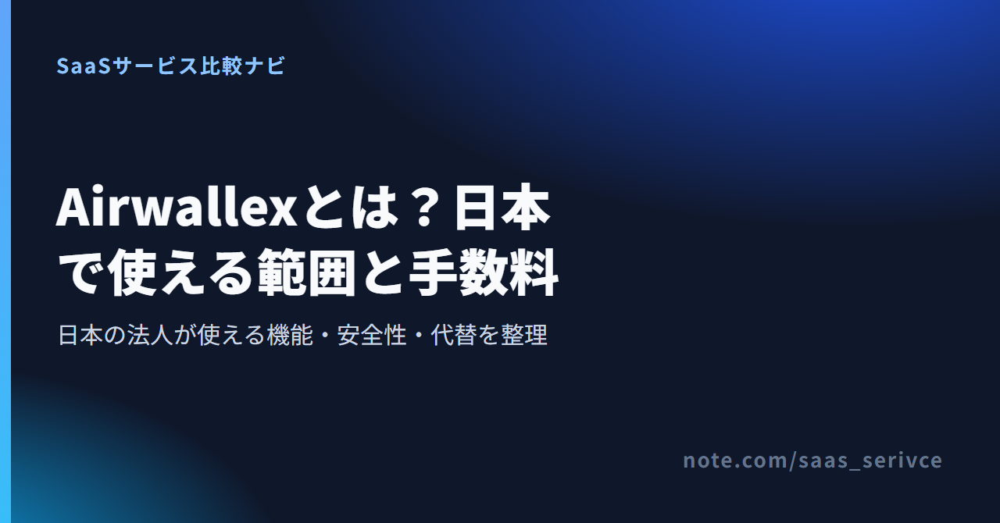
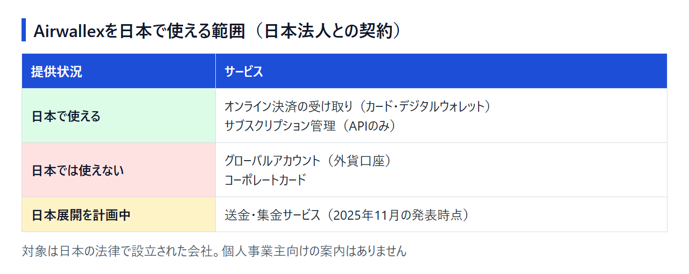

海外の顧客から代金を受け取りたい、外貨のまま売上を置いておきたい。そんな用途を調べると、Airwallex（エアウォレックス）の「口座・送金・カードをひとつに」という紹介によく行き当たります。
ただ、その説明の多くはシンガポールや英国などで契約した場合の話で、日本の法人が使える機能はもっと狭い範囲です。ここでは公式情報と海外の公開レビューをもとに、日本で使えるもの・使えないもの、手数料、安全性を整理します。申し込むか、別のサービスを探すかを決める材料にしてください。
日本の法人がAirwallexで今使えるのは、主にオンライン決済の受け取りです。 送金・集金は日本での展開が計画されていますが、外貨口座（グローバルアカウント）とコーポレートカードは、日本での提供予定が発表されていません。
日本で登記した法人の契約先は、日本法人のAirwallex Japan株式会社です。日本向けの利用規約は利用者を日本の法律で設立された会社としていて、個人事業主向けの案内はありません。提供状況は次の3つに分かれます。

向いているのは、次の条件に当てはまる日本の法人です。
反対に、外貨のまま受け取って置いておく、外貨で海外へ送金する、法人カードで広告費を払うといった目的は、今の日本の契約では満たせません。個人事業主も対象外と考えたほうがよいでしょう。こうした場合の行き先は、後半の「外貨口座や送金が必要な場合の選択肢」で紹介します。
料金ページには、決済の手数料と並んで、日本で使えない項目の注記もあります。自社の用途が「使える」側に入っているかを先に見ておいてください。
Airwallexは、越境決済と海外送金を手がけるフィンテック企業です。 日本では、Airwallex Japan株式会社が国内の登録を受けて事業をしています。
Airwallexは2015年、CEOのジャック・チャン（Jack Zhang）氏らがオーストラリアのメルボルンで創業しました。現在はシンガポールとサンフランシスコの2か所に本社を置き、中国語圏では「空中云汇（空中雲匯）」の名で知られています。多通貨の口座、海外送金と両替、法人カード、オンライン決済の受け取りを、企業向けにひとつの管理画面で提供してきました。
2026年6月にはシリーズHで3億2,000万ドルを調達し、企業価値が110億ドルになったと発表しています。同じ発表時点で拠点は27オフィス、従業員は2,300人を超えています。人材の募集は、公式サイトの採用ページで行っています。年内の上場（IPO）に向けて準備を進めているとも報じられました。
契約先の現地法人は、申し込む会社の登記国で決まります。海外の記事で紹介される機能は、その国の現地法人との契約で使えるものです。
Airwallex Japan株式会社の所在地は東京都港区北青山で、2025年11月12日に内山憲氏が代表に就任しました。国内では金融庁・経済産業省・関東財務局から3つの登録を受けています。登録番号は、後半の安全性の章で紹介します。
2025年9月には第二種資金移動業者の登録を受け、同年11月の発表で、送金・集金サービスの日本展開を計画していると明らかにしました。
名前の似た「エアウォレット（AirWallet）」は、リクルートMUFGビジネスの個人向け送金・支払いアプリで、Airwallexとは関係ありません。アプリやログイン画面を探すときは、運営会社の名前を確かめてください。
機能の幅は広いものの、日本の契約で使えるのは決済の受け取りまわりに限られます。 海外向けの紹介は、日本の契約にそのまま当てはまりません。
グローバル版では複数通貨の受取口座を持ち、入金を外貨のまま受け取って、両替やSWIFT・各国の国内送金で送れます。日本の契約ではこの口座がないため、IBANの発行や残高の利回りも対象外です。送金・集金も、日本ではまだ計画の段階です。
グローバル版では法人カードを発行し、カード保有者ごとの経費精算まで管理画面で済ませられます。料金ページには経費管理の料金も載っていますが、コーポレートカードと経費管理には日本では利用できないという注記があります。カードそのものが日本で使えないので、カードのキャッシュバックやApple Payへの登録、カード側の3Dセキュア設定も対象外です。
日本で提供されている機能の中心がここです。自社のサイトやアプリで、Visa・Mastercard・American Expressのカードと、Apple Pay・Google Payによる支払いを受け付けられます。サブスクリプション管理はAPI経由で、定期課金を自社のシステムに組み込む形です。
会計ソフト（Xero・QuickBooks・NetSuite）やショッピングプラグインとの連携は、料金ページで無料とされています。一方、支払いリンクや入金までの日数については、日本向けの案内が見当たりません。ECサイトに組み込むなら、申込みの段階で使える機能を問い合わせておくと開発の手戻りを防げます。
月額の基本料金はなく、日本で使うオンライン決済は1件ごとに3.20%＋40円（国際カードは＋0.5%）です。 料金ページに無料トライアルの案内はありません。
日本向けの料金ページは円表示で、日本の契約で使える項目は次のとおりです。
1万円の決済なら、320円に40円を足した360円が手数料です。海外発行のカードで払われると、さらに0.5%の50円が加わります。海外の顧客が中心なら、この上乗せ込みで利益を見積もっておきましょう。
国際カードの上乗せや対象の決済手段は、日本向けの料金ページで確かめられます。
料金ページには次の項目も並んでいます。このうちグローバルアカウント・コーポレートカード・経費管理には、日本では利用できないという注記があります。送金と両替に注記はありませんが、日本の送金・集金は2025年11月に展開の計画が示された段階です。「この料金で送金できる」とは読まず、使いたいなら申し込む前に対象かどうかを問い合わせてください。
手数料がかかる場面が、そもそも違います。
Airwallexは「売上を受け取る」とき、Wise Businessや銀行は「送る・両替する」ときの費用なので、どれが安いかを一律には比べられません。手数料にかかる消費税や海外売上の会計処理は、顧問の税理士に確認してください。
Airwallex Japan株式会社は国の登録を受けた事業者で、正体の分からない会社ではありません。 一方、海外のレビューでは審査の厳しさ、アカウント停止、資金の保留への不満が目立ちます。
「詐欺（詐騙）ではないか」と不安な方も、少なくとも国の登録を受けた実在の事業者であることは、この3つで確かめられます。ただ、登録があるからといって、次に紹介するアカウント停止や入金保留のリスクまで消えるわけではありません。
偽サイトを避けるため、ログインは公式ドメイン（airwallex.com）を確かめて行い、検索広告やメール、SNSのリンクからは入らないでください。銀行ではないので、残高は預金保険の対象外です。
日本語の利用者レビューはまだほとんどなく、参考になるのはTrustpilotやRedditの英語の投稿です。低評価の投稿では、次の内容がよく挙がります。
手数料の明快さや、複数通貨をひとつの画面で管理できる点を評価する声もあります。ただ、良い声も悪い声も英語の投稿で、多くは海外で契約した利用者のものです。このうち日本の契約にも関係するのは、入金の保留です。オンライン決済の入金時期は、決済手段ごとのスケジュールと、売上の一部を留め置くリザーブの条件で決まるとヘルプで説明されています。
日本で登記した法人は、公式サイトからAirwallex Japan株式会社の契約として申し込めます。 サポートは日本語サイトから入っても、英語のヘルプセンターと問い合わせフォームにつながります。
日本語サイトの申込みページからアカウントを作成し、会社の情報を入力して審査を受けます。導入について先に相談したい場合は、同じサイトからデモの予約にも進めます。
申し込む前に日本向けの料金ページと利用規約を読んでおけば、使える範囲と解約の条件を先に確かめられます。
契約後は、日本語サイト右上の「ログイン」から管理画面に入ります。iPhone・Android向けのアプリもあり、日本語サイトからApp StoreとGoogle Playのページへ進めます。
日本語サイトのFAQやサポートのリンク先は、英語のヘルプセンターと問い合わせフォームです。日本語で対応するという案内は見当たりません。
日本向けの利用規約では、解約について次のように決められています。
外貨のまま受け取る・置いておく・送るといった用途は、今の日本法人の契約では満たせません。 海外に法人があればその国のAirwallexを、日本法人だけならWise BusinessかPayoneerを検討します。個人事業主ならPayoneerが候補です。
シンガポールや香港、英国、米国などに法人があれば、その国の契約でグローバルアカウントや法人カードを使える可能性があります。ただし提供機能は国ごとに異なります。公式ヘルプの「Eligible Countries and Territories」で登記国と契約先を照らし合わせ、その国の料金ページで機能を確かめてください。
Wise Businessは、日本の法人向けに円表示の料金ページがある送金・受取サービスです。月額費用はなく、設定手数料3,000円を1回払うと、21通貨の受取口座情報を持てます。米ドル・ユーロなど8通貨は、現地の国内送金で受け取れば無料です。為替に上乗せせず、手数料を0.27%〜と別に示すので、送る前に費用を見積もれます。一方、米ドルをSWIFTで受け取ると1件6.11 USDかかるため、取引先に国内送金で払ってもらえるかも確かめましょう。
日本語の法人向けページから、通貨ごとの手数料一覧と申込みの案内に進めます。
Payoneerは、海外の取引先やマーケットプレイスからの入金を受け取る受取口座サービスで、法人だけでなくフリーランスも利用の対象です。開設は無料で、連続する12か月の受取額が6,000 USD相当に届かないときだけ、年29.95 USD（1ドル=157円換算で約4,700円。執筆時点の目安で、為替で変動します）がかかります。日本の銀行へ円で出金するときは送金手数料が無料で、代わりに為替へ2%〜1%の上乗せがあります。
日本居住者向けサービスの一部は、資金移動業者のペイオニア・ジャパン株式会社（関東財務局長 第00045号）が提供しています。既存の利用者向けに、平日9時〜18時の日本語の電話サポートも案内しています。日本語サポートの案内がないAirwallexとは、ここが大きく違います。
日本語の公式サイトで、受取と出金の手数料、日本の事業者向けの案内を読めます。
Revolut Businessに申し込めるのは、英国・EEAで登記して拠点を証明できる会社と、米国で登記した会社です。日本で登記した法人は対象外で、日本在住の人が使うなら、米国法人の口座として使うことになります。対象外の国からの申込みは優先ウェイティングリストへの登録になるため、日本法人の選択肢からは外して考えてください。
日本向けの利用規約は、利用者を日本の法律に基づいて設立された会社としています。個人事業主の申込みについての案内はないため、法人での利用が前提です。個人事業主として海外からの入金を受け取りたいなら、フリーランスも利用の対象になっているPayoneerを検討してください。
はい、Airwallexの中国語名です。簡体字で「空中云汇」、繁体字で「空中雲匯」と書きます。ただし中国語圏の記事で紹介される口座やカードは香港などの契約が前提で、日本の契約では使えません。
日本の契約で使えるAirwallexの機能は、オンライン決済の受け取りが中心です。Airwallexならではの点は、海外のグループ会社がその国の契約で同じ事業者の口座やカードを使える場合があることと、日本でも送金・集金の展開を計画していることです。
2026年6月に、年内の上場（IPO）に向けて準備を進めていると報じられました。上場の時期や市場について、会社からの公式発表はありません。
カードやApple Pay・Google Payでの決済を受け付けたい日本の法人、とくに海外のグループ会社でAirwallexを使っている会社なら、Airwallexは候補になります。 外貨口座や法人カードが目的なら、日本での提供予定が発表されていないため、Wise BusinessやPayoneerを使うのが現実的です。
決済の受け取りが目的なら、日本向けの料金ページで手数料と対象の決済手段を確かめてから申し込みましょう。
日本語の公式サイトから、料金ページと申込みの画面へ進めます。